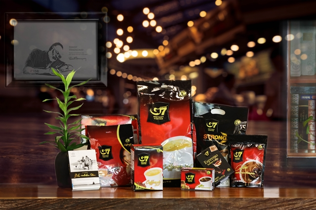
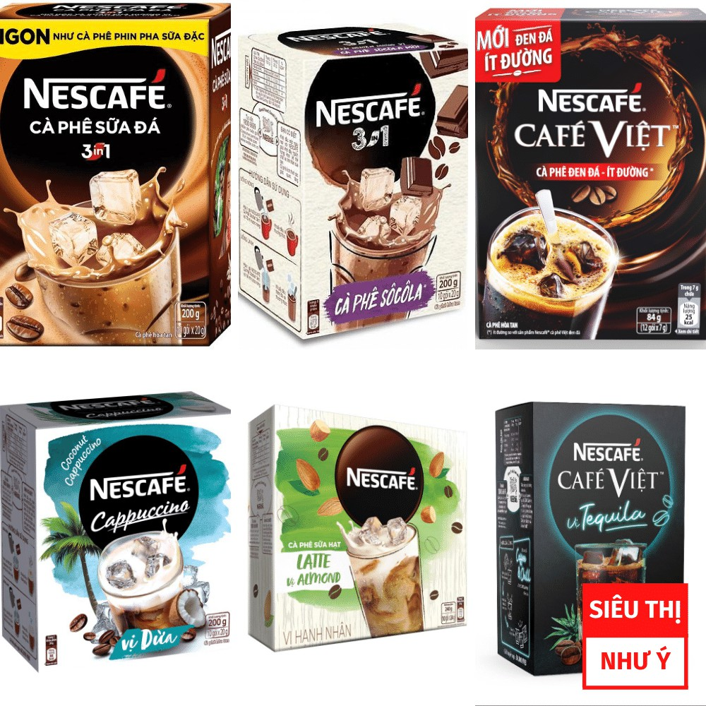
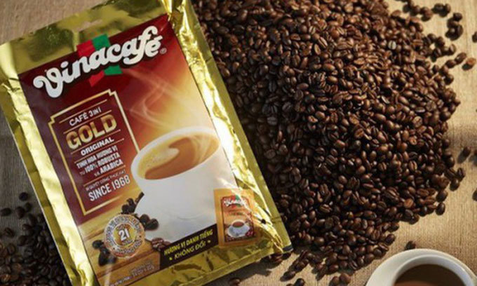

Trung Nguyen coffee is most famous for its strong taste and aroma. It is the leading local in Vietnam nad a big exporter - you can find Trung Nguyen Coffee in ver 70 countries in the world. There is a wide range of product diverse in the mix os coffee beans and procesing methods. Trung Nguyen coffee has 3 main types, instant coffee, roasted coffee and distinctive (weasel) one.
  Focusing more on the mild side. Vina Cafe is among the best choises dor instant blended coffee. This brand is most famous for its creamy, hazelnutty flovor for those with a sweet tooth. Vina Cafe has been the coffee of our childhood and still common among Vietnamese households. The most popular ones are VinaCafe 3-in-1, Wake-up Cafe with Weasel Flavor.
NESCAFE - the famous worldwide brand, comes with a lot of choices for dicerning market of Vietnam coffee connoisseurs. Among their product, instants ones are top of mind. Their blended coffee comes in different levels of strong tasts that can be delicous than their ground coffee counterparts. Their NESCAFE cans Mocha/latte are a good choice when you want just a pack of ready-made goodness.